Практика
Не спорт и не растяжка. Это работа с телом изнутри — через дыхание, движение и тишину. Подходит любому уровню.
Египет · Акабский залив · 11–21 ноября 2026
Одиннадцать дней цифровой трезвости на берегу Красного моря. Утренняя практика у воды, тишина пустыни и медленный ритм, в котором хочется остаться.
«Я ехала туда выгоревшей, а вернулась с ясным ощущением себя. Дахаб — это магия» — Екатерина, участница кэмпа 2025
Камерный формат · 11 дней
Десять дней акустического покоя на берегу Акабского залива. В ноябре Дахаб не для туристов — для тех, кто приезжает медленно. Море +26°С, солнце уже без ожогов, ветер с пустыни.
Скрытые каньоны Синая в двадцати минутах от берега: лабиринты из песчаника, подсвеченные солнцем, и баня-темаскаль среди скал. Лагуна Абу-Галум — заповедник, куда добираются только вдоль берега.


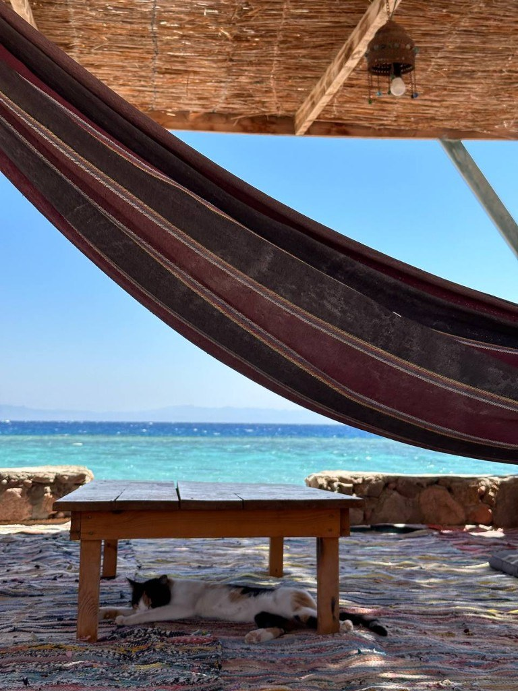
Не спорт и не растяжка. Это работа с телом изнутри — через дыхание, движение и тишину. Подходит любому уровню.
Выходишь из номера — и уже у воды. Горы за спиной, пустыня рядом, никаких пробок между тобой и морем.
Пятнадцать — это когда ты не теряешься в толпе, но находишь своих.
Дахаб · 11–21 ноября
Мы спроектировали программу так, чтобы глубокие практики чередовались с моментами абсолютной тишины, созерцанием пустыни и чистым восторгом от моря. Вы можете следовать общему ритму или выбрать свой собственный — без расписания по минутам.
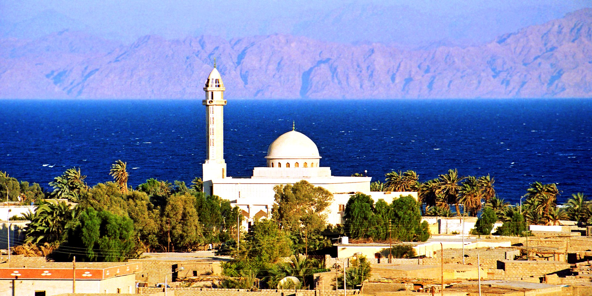
Встреча в Шарм-Эль-Шейхе, групповой трансфер, заселение, знакомство и мягкая вечерняя практика.
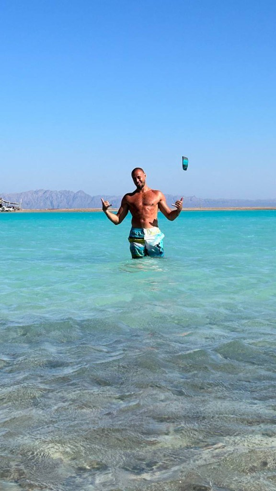
Утренние занятия, вечернее восстановление, прогулки, снорклинг и свободное время без спешки.

Выезд в каньоны: красные скалы, трекинг по ущелью и баня-темаскаль как сильная точка всей программы — для перезагрузки тела и головы.
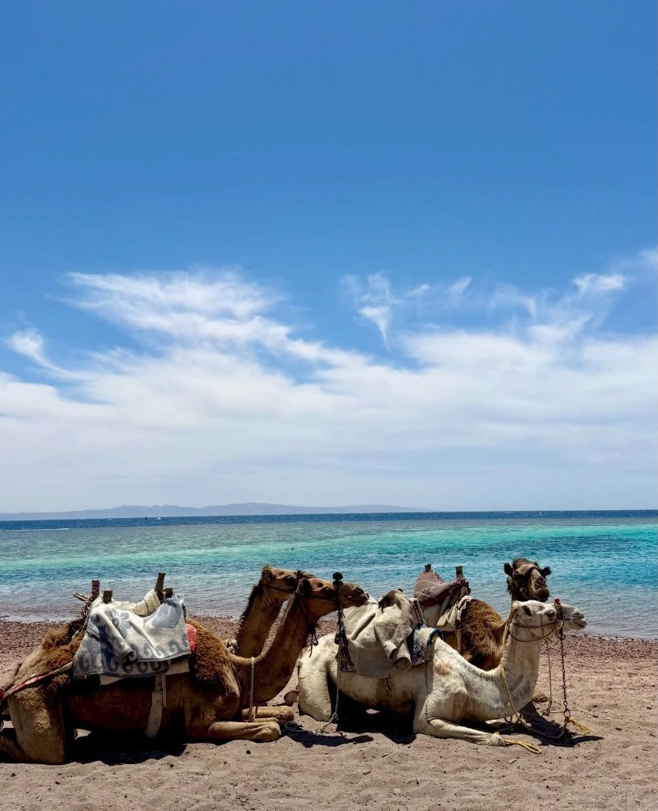
Заповедное побережье, прозрачная вода, купание, созерцание и медленный день у моря.

Дополнительный выезд с Дахабским горным клубом для тех, кому хочется чуть больше движения и высоты.

Закрытие круга, сборы, трансфер в аэропорт Шарм-Эль-Шейха.
Каждый день строится вокруг двух полюсов: утром тело просыпается и собирается, вечером отпускает лишнее. Сетка остаётся живой, потому что группа, погода и состояние людей важнее жёсткого расписания.
Йога для спины, суставов и баланса, дыхательные техники, мягкая силовая работа.
Расслабление, медитации, растяжка, дыхание и восстановление нервной системы.
Море, прогулки, выезды, снорклинг или просто свободное время без чувства вины.
Дахаб хорош тем, что ничего не навязывает. Ты просто выходишь к морю, дышишь, двигаешься — и постепенно возвращаешься к себе.
Илья Баринов
Условия без мелкого шрифта
Мы берём на себя основу маршрута, чтобы тебе было легче приехать — без лишних переписок, поиска и бытовой суеты.
10 ночей в El Salam Hotel в Дахабе. Завтраки включены.
Шарм-Эль-Шейх — Дахаб и обратно, поездки в каньоны и к Абу-Галум.
Йога, дыхание, восстановление, медитативные блоки.
Выезд в красные скалы и трекинг по ущелью.
Ритуал среди скал — сильная точка программы для перезагрузки тела и головы.
День у заповедного побережья: прозрачная вода, купание, медленный ритм.
Мы рядом во всех бытовых деталях, где хочется спросить живого человека.
Мы полностью берём на себя координацию вашего путешествия: поможем подобрать оптимальный авиаперелёт под групповой трансфер, оформить спортивную страховку и подскажем лучшие локальные места для обедов и ужинов.
Жить рядом с водой
Отель в районе Dahab Beach: завтраки, Wi-Fi, бассейн, ресторан и бар. Белые стены, внутренний двор с бассейном и номера с балконами — спокойная база между практиками и морем.
Финальный тип номера и детали размещения подтверждаем после формирования группы.
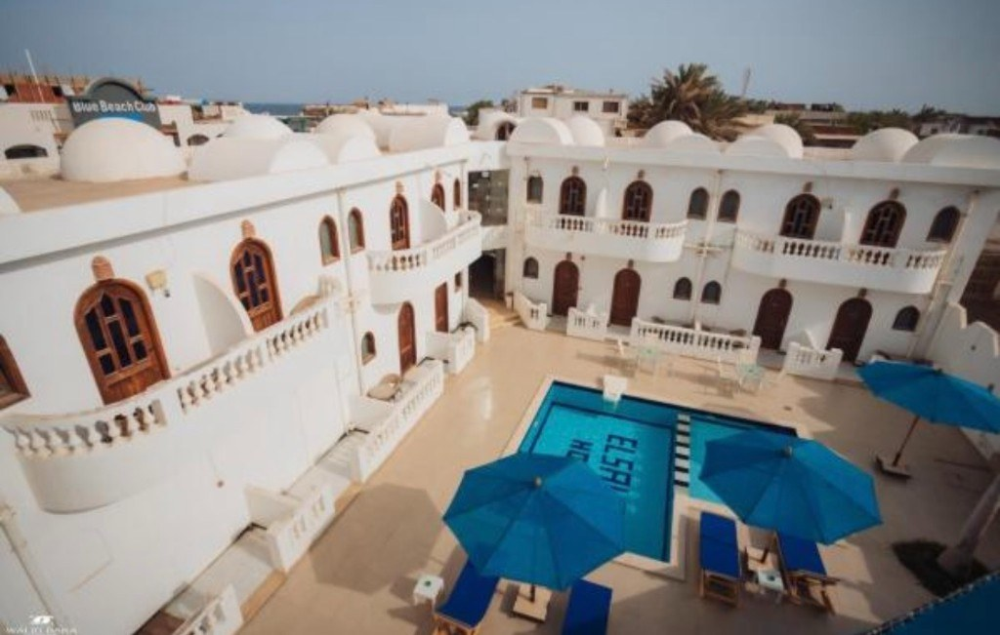
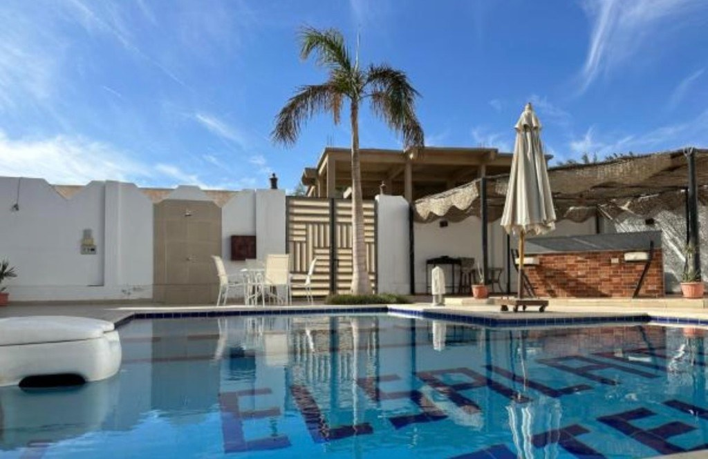
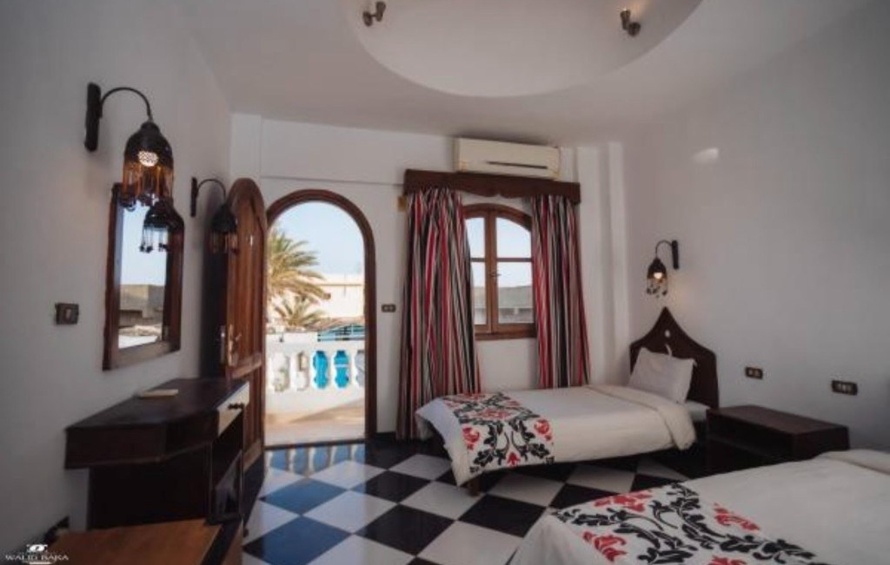
Можно добавить
Фридайвинг с Анастасией Якименко — для желающих. Сначала дыхание на суше, потом — первое ощущение невесомости под водой на задержке дыхания. Легендарный Blue Hole начинается прямо у берега, в нескольких минутах от отеля.
Скалы Синая можно добавить через Дахабский горный клуб: формат и стоимость подбираем по группе.
Посмотреть программы горного клуба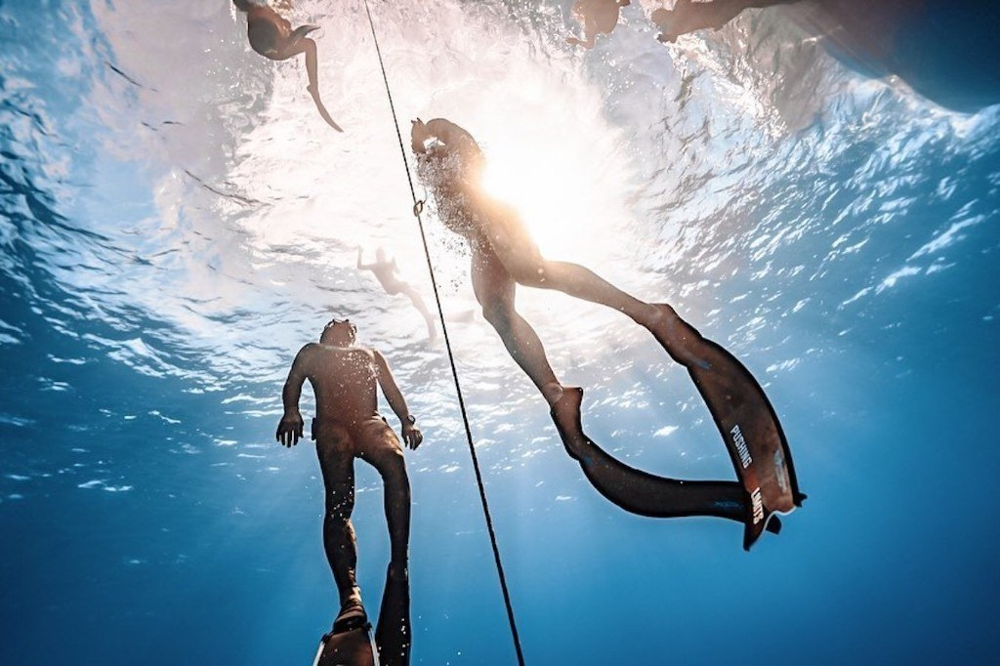

Визуальный маршрут
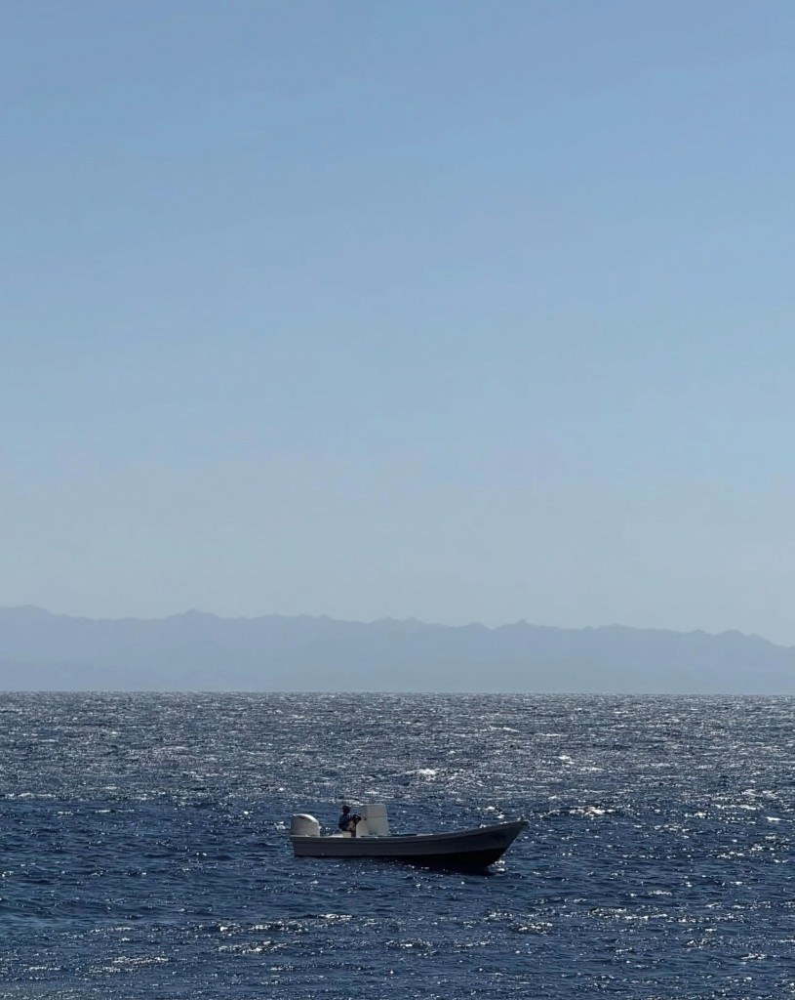
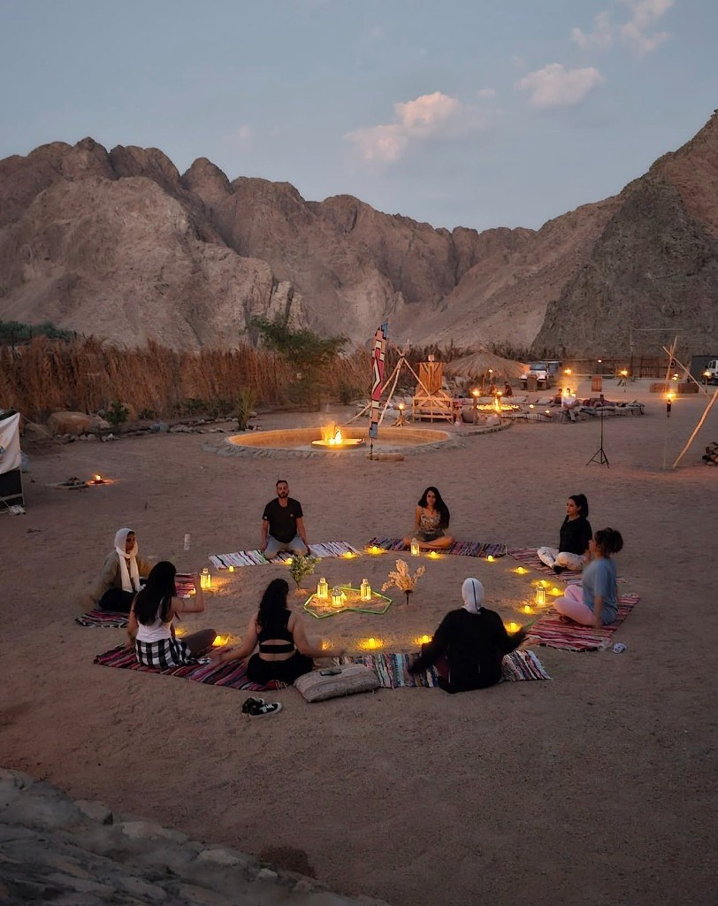

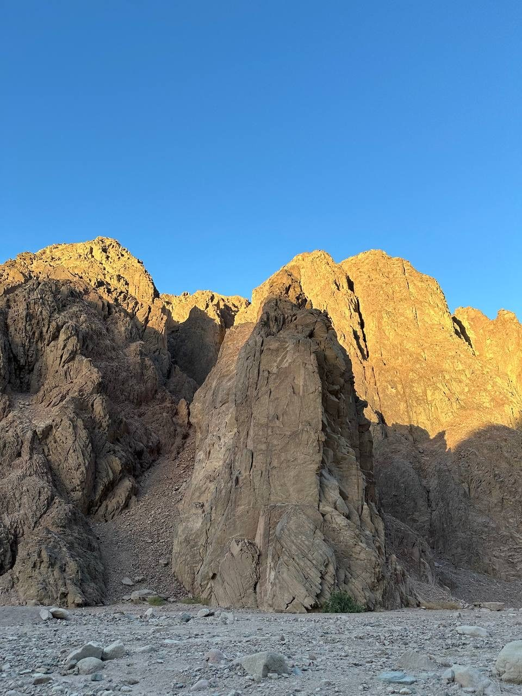


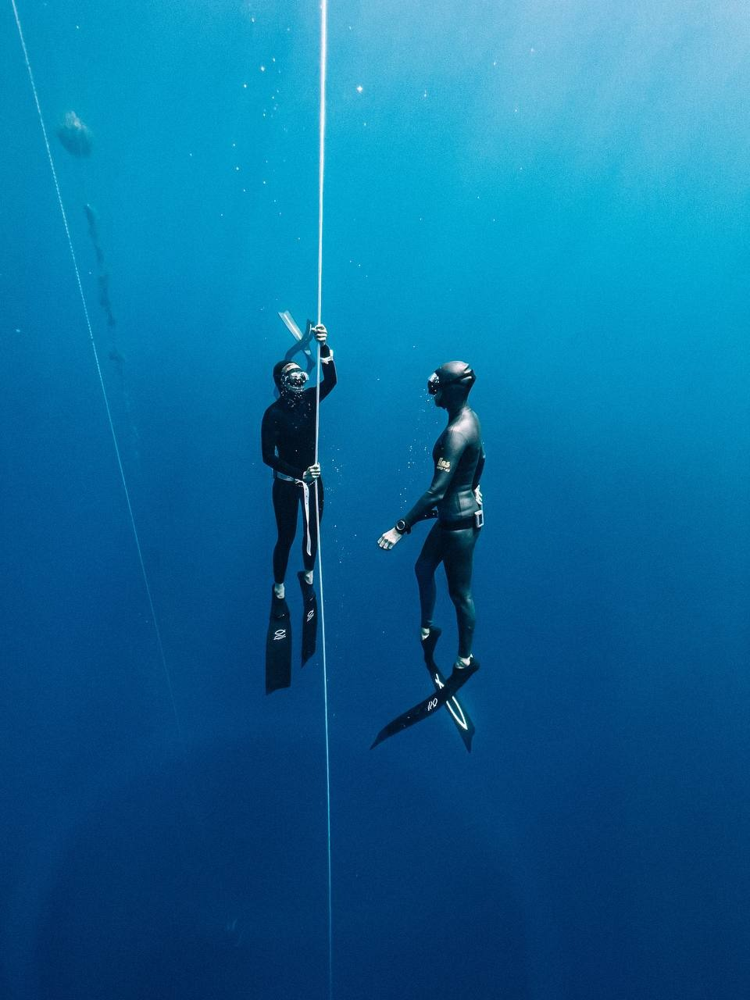
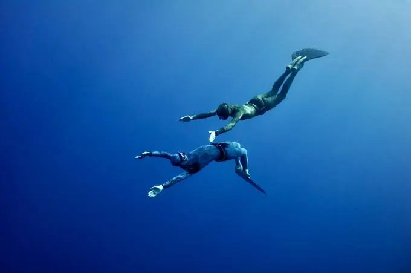
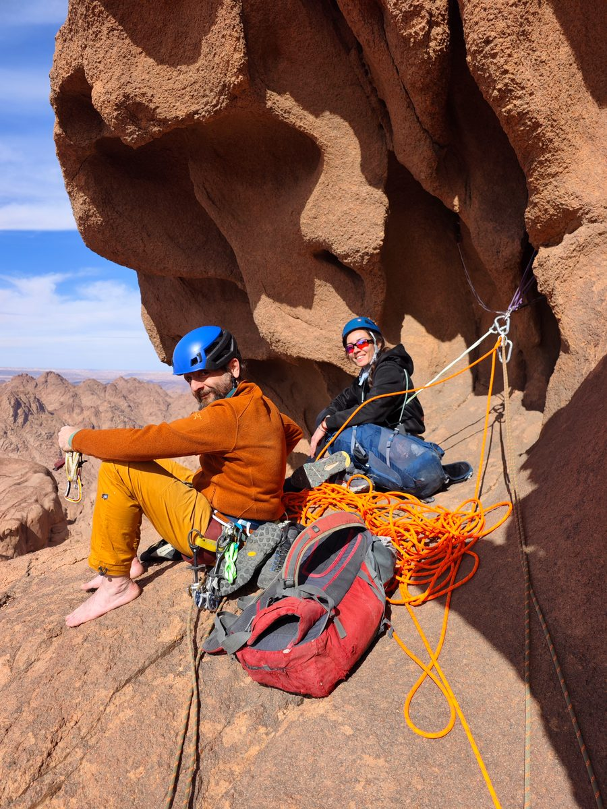
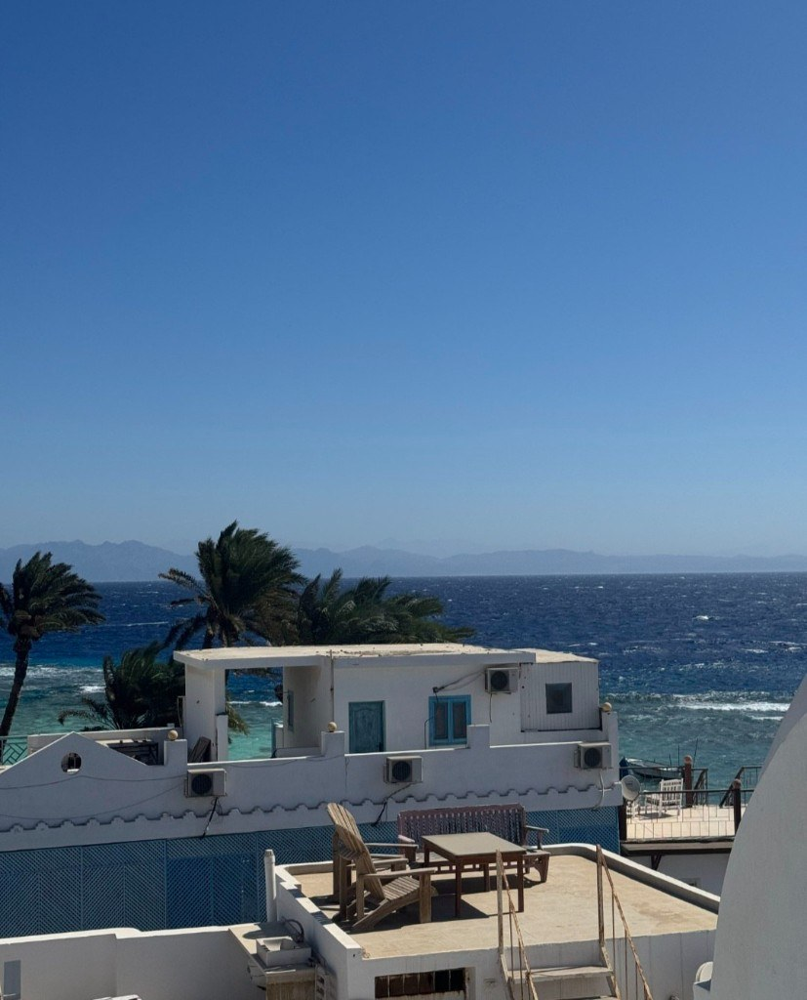
Люди, которые держат пространство

Ведущий практик

Организатор

Фридайвинг
Инвестиция в путешествие
99 000 ₽
Этап I · Раннее бронирование
Продано. Первые 5 мест заняты.
109 000 ₽
Этап II · Основной пул
Продано. Следующие 5 мест заняты.
119 000 ₽
Этап III · Финальный пул
Последние 5 мест в камерной группе до 15 человек. Предоплата 40 000 ₽ фиксирует место. Остаток — до 11 октября.
Стоимость фиксируется в момент внесения предоплаты и не изменяется.
В стоимость кэмпа сознательно заложена вся внутренняя логистика: трансферы внутри Египта, частные практики у воды, выезды в каньоны Синая, баня-темаскаль среди скал и день у Голубой лагуны.
Никаких скрытых платежей и доплат на месте. Возврат предоплаты 100 % при отмене до 12 октября.
Вопросы перед поездкой
Нет. Практики можно адаптировать под разный уровень. Важно заранее предупредить о травмах, ограничениях и текущем состоянии здоровья.
Да. Формат маленькой группы как раз хорошо подходит для тех, кто едет без пары или друзей.
Нет. Это дополнительная опция с отдельной стоимостью и расписанием.
После подтверждения места лучше согласовать рейс с организаторами, чтобы попасть в общий трансфер из Шарм-Эль-Шейха.
Закрытый формат
Группа ограничена 15 участниками — мы собираем бережное и близкое по духу сообщество. Оставьте контакты, и основатель команды свяжется с вами в Telegram для короткого знакомства.